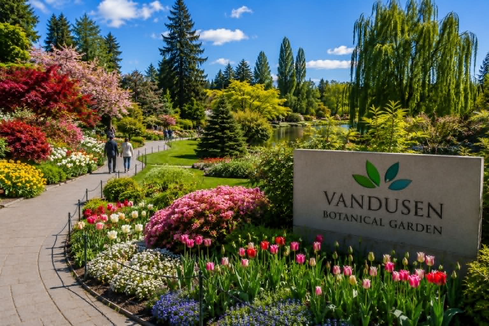
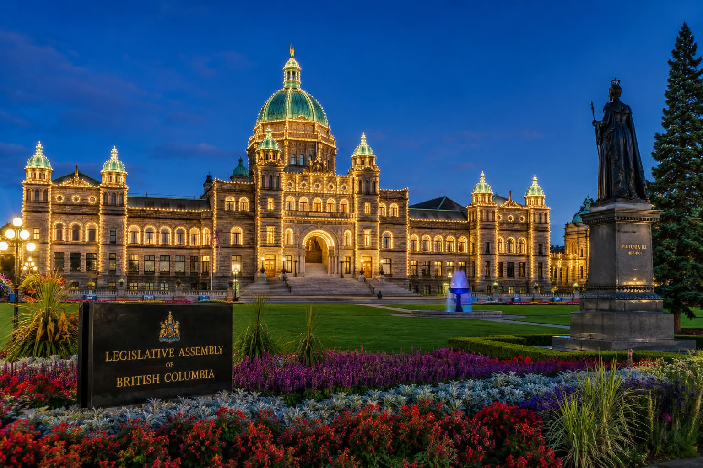

Discover Beautiful British Columbia
From Vancouver landmarks to mountain adventures, gardens, and island destinations, these attractions are great places to explore with family and friends.
All driving times are approximate from: Hilton Vancouver Metrotown

Canada Place
Vancouver's famous waterfront landmark with its iconic white sails and beautiful harbour views.
🚗 Approx. 20 minutes from Hilton Vancouver Metrotown

Stanley Park
One of the world's most beautiful urban parks, featuring forests, beaches, seawall paths, and mountain views.
🚗 Approx. 25 minutes from Hilton Vancouver Metrotown

Gastown
Vancouver's oldest neighbourhood, known for cobblestone streets, historic buildings, and the Steam Clock.
🚗 Approx. 20 minutes from Hilton Vancouver Metrotown

Granville Island
A popular waterfront destination with markets, restaurants, shops, galleries, and scenic views.
🚗 Approx. 20 minutes from Hilton Vancouver Metrotown

Capilano Suspension Bridge
A world-famous rainforest attraction with a spectacular suspension bridge over a canyon.
🚗 Approx. 30 minutes from Hilton Vancouver Metrotown

Grouse Mountain
A popular mountain destination with spectacular views of Vancouver, hiking trails, wildlife, and the Skyride gondola.
🚗 Approx. 35 minutes from Hilton Vancouver Metrotown

Cypress Mountain
Mountain destination offering hiking, winter activities, and panoramic views of Vancouver and Howe Sound.
🚗 Approx. 45 minutes from Hilton Vancouver Metrotown

Whistler Mountain
A world-famous resort destination with alpine scenery, shopping, dining, and outdoor adventures.
🚗 Approx. 2 hours from Hilton Vancouver Metrotown

Butchart Gardens
A world-renowned garden near Victoria featuring beautiful flowers and landscapes.
🚗 Approx. 4 hours including ferry travel

Lafarge Lake
A peaceful Coquitlam lake destination with walking trails, gardens, and seasonal events.
🚗 Approx. 30 minutes from Hilton Vancouver Metrotown

VanDusen Botanical Garden
A beautiful Vancouver garden featuring flowers, pathways, ponds, and seasonal displays.
🚗 Approx. 15 minutes from Hilton Vancouver Metrotown

Victoria, British Columbia
British Columbia's capital city featuring the Inner Harbour, historic buildings, gardens, and waterfront scenery.
🚗 Approx. 4 hours including ferry travel